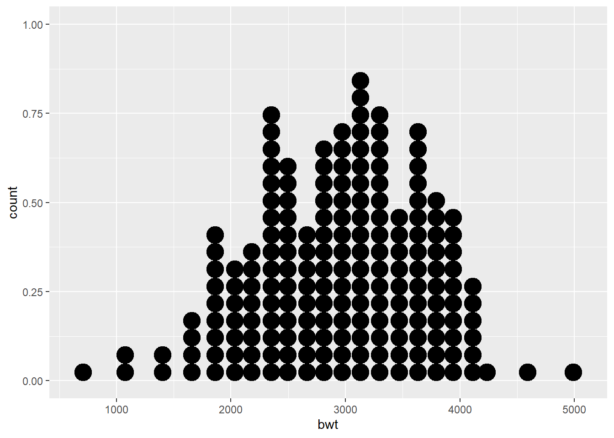
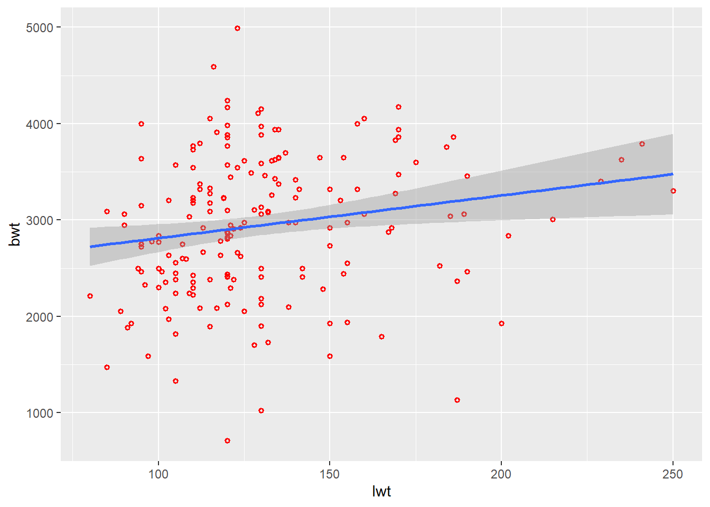

df <- MASS::birthwt3 Data Visualization
3.1 Basics
The present session will focus on basics of data visualization.
3.1.1 Statistical Underpinnings
Before we start with learning how to create graphs/ plots/ figures using R, it is important to understand that the selection of type of plots is dependent entirely upon the number and type of variables selected. Though we are not covering the bio statistics module, it is strongly recommended that the same be refreshed and strengthened by participants from time to time for advanced use of data analytics in future.
3.1.2 Programming Basics
Data visualization is a powerful tool for data science in epidemiology. The basics of programming for creating plots using ggplot package includes understanding of four important aspects.
- Use of reusable/ reproducible templates.
- Creation of different types of plots using geoms.
- Addition of variables using mapping.
- Customization of plots using settings.
For illustration of concepts, we will be using birthwt data set from MASS package which includes data on Risk Factors Associated with Low Infant Birth Weight in the present session.
3.2 About the dataset
birthwtdataset from theMASSpackage
For illustrative examples in the sections on data visualization, data analysis, and summary tables, Risk Factors Associated with Low Infant Birth Weight dataset (birthwt) dataset has been used. It is an inbuilt dataset from the package MASS. To load the dataset, type the following R code
Since, it has been labelled as df, it has been reffered as df from here on. The dataset used has 189 rows and 10 columns. The data were collected at Baystate Medical Center, Springfield, Mass during 1986. The variables present in the data includes the following variables/ columns:-
low: indicator of birth weight less than 2.5 kgage: mother’s age in yearslwt: mother’s weight in pounds at last menstrual periodrace: mother’s race (1 = white, 2 = black, 3 = other)smoke: smoking status during pregnancyptl: number of previous premature laboursht: history of hypertensionui: presence of uterine irritabilityftv: number of physician visits during the first trimesterbwt: birth weight in grams
Hosmer, D.W. and Lemeshow, S. (1989) Applied Logistic Regression. New York: Wiley
Venables, W. N. and Ripley, B. D. (2002) Modern Applied Statistics with S. Fourth edition. Springer.
3.3 Load Dataset
# install.packages("tidyverse") includes ggplot
# install.packages("MASS") includes multiple data sets for learning purposes
options(tidyverse.quiet = TRUE)
library(tidyverse)
df <- MASS::birthwtData cleaning (Detailed session on Day 03)
df <- df |>
mutate(smoke = factor(smoke,
levels = c(0,1),
labels = c("Non Smoker",
"Smoker"))) |>
mutate(race = factor(race,
levels = c(1,2,3),
labels = c("White",
"Black",
"Other"))) |>
mutate(low = factor(low,
levels = c(0,1),
labels = c("Normal",
"Low Birth Weight")))3.4 Visualization of single variable.
3.4.1 Continous variable
For illustration, we will plot birth weights to understand the distribution pattern among all study participants in birth weight data set.
3.4.1.1 Histogram
geom_histogram visualize the distribution of a single continuous variable by dividing the x axis into bins and counting the number of observations in each bin. Histograms geom_histogram() display the counts with bars
ggplot(data = df, aes(x = bwt)) + # Template
geom_histogram( # geom
mapping = aes(y = after_stat(density)), # mapping
binwidth = 350, # mandatory settings
color = "blue", # optional settings
fill = "red",
linetype = 1,
alpha = 0.5,
size = 1) +
geom_density(color = 'darkgreen', linetype = 1, linewidth = 2)Warning: Using `size` aesthetic for lines was deprecated in ggplot2 3.4.0.
ℹ Please use `linewidth` instead.Tips
Color: Determines color of the lines of histogram
Fill: Fills the histogram with specified color
Linetype: try numbers from 0 to 6
Alpha: Used for transparency adjustments. Varies from 0 (transparent) to 1 (Opaque)
Size: Determines thicknes of the lines
3.4.1.2 Frequency polygon
geom_freqpoly() display the counts with lines. Further, frequency polygons are more suitable when you want to compare the distribution across the levels of a categorical variable (we shall see later!).
ggplot(data = df) +
geom_freqpoly(mapping = aes(x = bwt),
binwidth = 350) # Alternative use of bins3.4.1.3 Dot plot
In a dot plot, the width of a dot corresponds to the bin width, and dots are stacked, with each dot representing one observation.
ggplot(data = df) +
geom_dotplot(mapping = aes(x = bwt),
binwidth = 150) 
3.4.1.4 Box and whisker plot
The boxplot compactly displays the distribution of a continuous variable. It visualizes five summary statistics (the median, two hinges and two whiskers), and all “outlying” points individually.
ggplot(data = df) +
geom_boxplot(mapping = aes(y = bwt),
coef = 1.5) 
What happens if we change the coef argument to 3?
3.4.1.5 Density plot
geom_density computes and draws kernel density estimate, which is a smoothed version of the histogram. This is a useful alternative to the histogram for continuous data that comes from an underlying smooth distribution.
ggplot(data = df) +
geom_density(mapping = aes(x = bwt))Tip
Multiple plots can be combined for enhanced visualization. For example, we can combine histogram and frequency polygon.
##Create a histogram and save it as an object
histogram <- ggplot(data = df) +
geom_histogram(
mapping = aes(x = bwt),
binwidth = 350,
color = "blue",
fill = "red",
alpha = 0.2)
##Add a frequency polygon
histogram +
geom_freqpoly(mapping = aes(x = bwt),
binwidth = 350)3.4.2 Discrete/ Categorical variable.
Illustrative example: In the birth weight dataset, if we are interested to understand the distribution of smoking history (Present/Absent) among mothers.
3.4.2.1 Bar Chart
geom_bar() makes the height of the bar proportional to the number of cases in each group.
ggplot(data = df) +
geom_bar(mapping = aes(x = smoke)) Add optional arguments (settings) to enhance visualizations.
What happens if we provide y axis rather than x axis?
What happens if instead of writing , we write only in the code chunk?
3.5 Visualization of two variables.
3.5.1 Two continous variables.
Illustrative example: In the birth weights dataset, mother’s weight at last menstrual period and birth weight of the infant are continuous variables. We might be interested in looking at how mother’s weight is associated with birth weight of an infant.
3.5.1.1 Scatter plot
The geom_point is used to create scatter plots. The scatter plot is most useful for displaying the relationship between two continuous variables.
ggplot(data = df) +
geom_point(aes(x = lwt, y = bwt),
color = "red",
size = 1,
shape = 1,
stroke = 1) Tips
Shape of a scatter plot can be changed using numbers (see below)
Stroke argument in scatter plot determines the width of the border of the shapes
In scatter plots, the fill argument works with selected shapes
What happens if the size is changed to 10?
When would you like to reduce the size further?
Can we use geom_point to look at relationships between two variables, even if they are not continuous variables?
Try using instead of . What do you observe?
3.5.1.2 Scatter plot with regression line
Further, we can add a regression line to understand the relationship by using geom_smooth. It aids the eye in seeing patterns, especially in the presence of overplotting.
ggplot(data = df) +
geom_point(aes(x = lwt, y = bwt),
color = "red",
size = 1,
shape = 1,
stroke = 1) +
geom_smooth(aes(x = lwt, y = bwt),
method = lm,
se = T)`geom_smooth()` using formula = 'y ~ x'
Tips Change the method to loess. What do you observe?
3.5.1.3 Scatter plot with marginal plots
You can explore additional features with ggExtra package for marginal plots and gridExtra package for arranging multiple plots.
library(ggExtra)
library(gridExtra)
plot <-
ggplot(data = df) +
geom_point(aes(x = lwt, y = bwt),
color = "red",
size = 1,
shape = 1,
stroke = 1)
plot1 <-
ggMarginal(plot, type = "histogram")
plot2 <-
ggMarginal(plot, type = "density")
plot3 <-
ggMarginal(plot, type = "boxplot")
# combine plots in a grid
grid.arrange( plot1, plot2, plot3, ncol=3)
3.5.2 One discrete and one continous variable.
Illustrative example: In the birth weights dataset, smoking history is categorical and birth weight is a continuous variable. We might be interested to estimate if maternal smoking history has effect on infant birth weights.
3.5.2.1 Bar chart
While using bar charts for two variables, an important additional argument which is used is stat = . Lets see!
ggplot(data = df) +
geom_bar(aes(x = smoke, y = bwt),
stat = "identity")Alternatively, geom_col can be used. As compared to geom_bar, since counts the number of cases at each x position, additional argument stat = is not required.
ggplot(data = df) +
geom_col(aes(x = smoke, y = bwt))
3.5.2.2 Box and whisker plot
ggplot(data = df) +
geom_boxplot(aes(x = smoke, y = bwt),
coef = 1.5)Tips Look at help menu to see additional arguments and change outlier color to red.
3.5.2.3 Dot plot
While creating a dot plot an additional mandatory argument in settings is binaxis = " ". The axis chosen is the axis with continuous variable.
Use geom_dotplot to create dot plot between smoking history and birth weight.
3.5.3 Two discrete variables
Illustrative example: In the dataset, smoking history and whether the infants birth weight was low or not are two discrete/ categorical variables. As a researcher, we would like to see the relationship between these two discrete variables.
3.5.3.1 Position adjustments in bar chart
To see relationships between two discrete variables, multiple bar charts and component bar charts are used. Till now, the fill argument has been used in the setting section of the code. If you look carefully, while in the setting section, we manually placed the value/ color. The same argument can also be used in mapping section within aesthetics.
ggplot(data = df) +
geom_bar(aes(x = smoke, fill = race),
position = "dodge")Replace to . What happens?
3.6 Visualization of three variables.
Illustrative example: In the birth weight dataset, a researcher is interested to look at relationship between maternal weight, smoking history, and infants birth weight.
Tip
When the setting arguments are shifted to mapping section, the computer automatically maps the value to develop the plot.
To visualize three or more variables, the settings arguments of color, shape, and size can be shifted to mapping section of the template we were using. Lets see!
ggplot(data = df) +
geom_point(aes(x = lwt, y = bwt, color = smoke))3.7 Visualization of four variables.
Now, lets see whether the race of mother is also playing a role in addition to her weight and smoking history in determining birth weight of the child
ggplot(data = df) +
geom_point(aes(x = lwt, y = bwt,
color = smoke,
shape = factor(race)),
size = 3)For incorporating additional variables, multiple approaches such as 3D visualizations, animations, facet charts, etc can be used. For further details, refer to https://exts.ggplot2.tidyverse.org/gallery/
3.8 Facet plots.
facet_grid() forms a matrix of panels defined by row and column faceting variables. It is most useful when you have two discrete variables, and all combinations of the variables exist in the data. If you have only one variable with many levels, try facet_wrap().
ggplot(data = df) +
geom_point(aes(x = lwt, y = bwt, color = smoke))+
facet_grid(.~race)What happens if we change to
Use facet_wrap instead of
facet_grid. What do you observe?
3.9 Way forward
3.9.1 Additional components
Now, we know how to create the plot. However, plot has additional components such as title, subtitle, caption, axis labels, legend, etc. The same also requires deliberation and details for the same can be learnt from multiple resources. We recommend R Graphics Cookbook https://r-graphics.org/ as a good resource for the same. We are introducing you to this important aspect of data visualization, however considering the present workshop as an introductory workshop and with time constraints, we plan to cover these aspects during intermediate/ advanced levels only.
ggplot(data = df) + # Template
geom_freqpoly( # geom
mapping = aes(x = bwt, color = smoke), # mapping
binwidth = 400,
size = 1.5) +
labs(title = "Birth weight and maternal smoking", # Title
subtitle = "Density plots", # Subtitle
caption = "Source: Low Birth Weight data (MASS)", # Caption
x = "Birth Weights (grams)", # x axis label
y = "Frequency",# y axis label
color = "Maternal Smoking history") + # Legend title
geom_text(x = 2400, # Additional text in the plot
y = 10,
label = " Ideal Birth weight",
color = "#990000", # RGB color coding palette
angle = 90,
alpha = .5,)+
geom_vline(xintercept= 2500, colour="#009900") + # Line insert
theme(legend.position = "left") + # Legend settings
theme_minimal() # Choosing background theme3.9.2 Maps
R is a powerful programming language. It has capabilities to create its own GIS environment. Though spatial analytics including spatial data visualization requires additional packages, to introduce the domain, we shall be using India spatial file and make a basic map within the tidyverse!
Since the map provided as demo is against the cartographic principles, despite being an introductory module, we would like you to get an exposure of cartographically correct map too!
3.9.3 Visual analytics
The domain of data visualization has gone beyond just visualizing data. Visual analytics and data visualization is now used across the data life cycle in epidemiology and health care. It has moved beyond descriptive epidemiology and is used for hypothesis testing, machine learning, artificial intelligence, time series analysis, spatio-temporal epidemiology, and many others.
Hope you have enjoyed the session! The Jump board is ready! Practice and see the power of visual analytics!! Best Wishes.